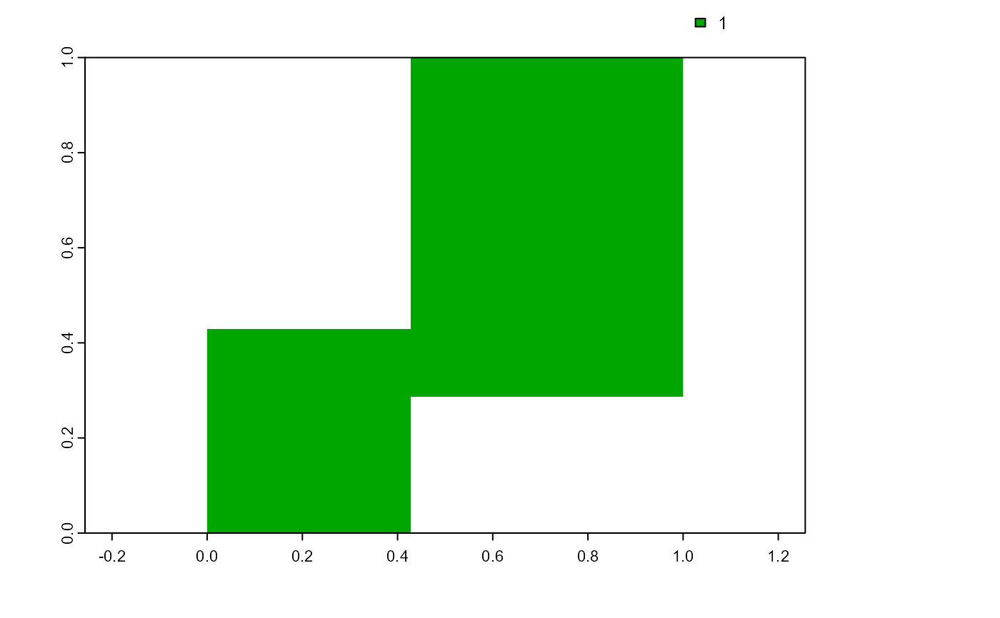

Transform a class vector or a generic vector into a raster.
cv.2.rast(
r,
classVector,
index = NULL,
plot = FALSE,
writeRaster = NULL,
overWrite = FALSE
)raster object.
numeric vector, the values to be assigned to the cell numbers
indicated by index.
numeric vector, the cell numbers of the argument r to
which assign the values of the argument classVector. If NULL,
the column Cell of the attribute table attTbl(r) is used (see
attTbl).
logic, plot the raster.
filename, if a raster name is provided save the raster to a file.
logic, if the raster names already exist, the existing file is overwritten.
A class vector or a generic vector transformed into a raster.
The arguments index and vector need to have the same
length. The function assign the values of vector at the positions of
index to an empty raster having the same spatial properties of the
raster r.
library(scapesClassification)
library(terra)
# LOAD THE DUMMY RASTER
r <- list.files(system.file("extdata", package = "scapesClassification"),
pattern = "dummy_raster\\.tif", full.names = TRUE)
r <- terra::rast(r)
# COMPUTE THE ATTRIBUTE TABLE
at <- attTbl(r, "dummy_var")
# COMPUTE THE LIST OF NEIGBORHOODS
nbs <- ngbList(r)
# Compute an example class vector
cv <- cond.4.all(attTbl = at, cond = "dummy_var > 1", class = 1)
# Class vector to raster
cv.2.rast(r, cv, plot = TRUE)
#> class : SpatRaster
#> dimensions : 7, 7, 1 (nrow, ncol, nlyr)
#> resolution : 0.1428571, 0.1428571 (x, y)
#> extent : 0, 1, 0, 1 (xmin, xmax, ymin, ymax)
#> coord. ref. : lon/lat WGS 84 (EPSG:4326)
#> source : memory
#> name : dummy_raster
#> min value : TRUE
#> max value : TRUE
text(r) # add raster values
